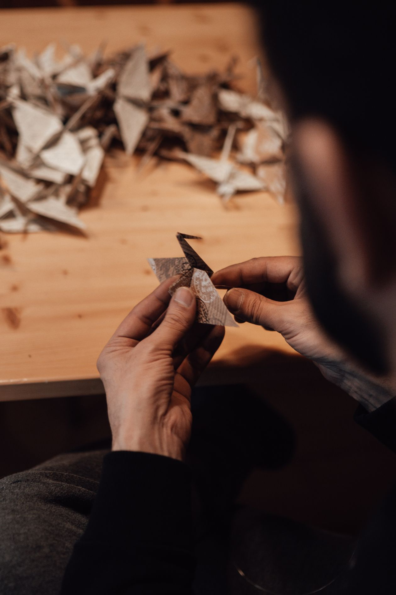

About
A maths teacher who kept folding
I taught mathematics in Leeds for nine years, and for most of them there was a paper crane on my desk that a student had left behind. Folding started as the thing I did in the holidays — library books, cheap kami paper, models that mostly failed. In 2016 I folded my first tessellation from a crease pattern in a borrowed book, and the geometry I had been teaching on whiteboards turned out to be something you could hold. That was the end of folding as a hobby.
I left teaching in 2019, moved to Bristol, and took a bench in a shared studio in the south of the city. The work since then has been commissions: panels for interiors, folded pieces for magazine covers and packaging prototypes, and installations like The Pattern Room. I am a member of the British Origami Society and diagram most of my own patterns — the drawings on this site are mine, drawn for the pieces they describe.
Two rules govern the studio. The first is the one on the home page: one sheet, no cuts, no glue — if a design needs a second sheet, it is a different design. The second is that a crease cannot be unmade. Paper remembers every fold it has ever been given, which is why test folds matter, why failed sheets are kept, and why a finished piece is, in the strictest sense, irreversible. Clients seem to like owning something that could not be taken back.
I also teach: a weekend tessellation class twice a year, eight places, in the studio. Dates go to the mailing list first — ask on the contact page if you would like to be on it.

Materials
Papers and tools
Origami has a short materials list and a long memory. These are the papers on the studio shelves and what each is actually for.
| Paper | Character | Used for | Notes |
|---|---|---|---|
| Washi (kozo) | Handmade, long mulberry fibres, strong for its weight | Wet-folding, large tessellations, installations | Forgiving — a crease can be worked many times before the fibres tire. The expensive option, and usually the right one. |
| Tant | Crisp, evenly coloured on both sides, holds a sharp crease | Tessellation panels, cranes, most commissions | The studio workhorse. Colours are lightfast enough for framed work away from windows. |
| Elephant Hide | Thick, dense, water-resistant | Waterbomb tessellations, structural folds | Too thick to crease cleanly by hand alone — every line is scored with a stylus first. Shrugs off damp air better than any other paper here. |
| Kami | Thin standard origami paper, coloured one side, white the other | Test folds, teaching, the drawer of failures | Cheap enough to be wrong with. Most new patterns are born and buried in kami before they earn better paper. |
| Glassine | Translucent, smooth, holds a fold well | Pieces made to be lit from behind | Shows every fingerprint; folded wearing cotton gloves. |
| Tool | Job |
|---|---|
| Bone folder | Sharpening creases without polishing or tearing the surface. |
| Embossing stylus | Scoring thick papers like Elephant Hide before they are folded. |
| Steel ruler and rotary cutter | Squaring sheets to size — the only cutting in the studio, done before folding begins. |
| Spray bottle | Wet-folding: dampening washi so curves set as the sheet dries. |
| Methyl cellulose | Sizing and back-coating thin papers to give them body. |
| Tweezers and weights | Placing the last pleats of a collapse, and persuading them to stay. |
Aftercare
Looking after folded work
Paper is tougher than it looks and more perishable than it feels. Five things decide how long a piece stays crisp.
-
Light
Sunlight fades paper and weakens it. Hang framed work out of direct sun; near a window, insist on UV acrylic. A piece on a south-facing wall will show it within a few years.
-
Humidity
Aim for ordinary room humidity, roughly 40–60%. Bathrooms and steamy kitchens soften creases over time — the one installation exception in the studio's history is maintained yearly for exactly this reason.
-
Dust
Dust with a soft, dry brush or a gentle stream of cool air. Never a damp cloth: water is a folding tool, and it will happily re-fold your piece.
-
Framing
Panels should be framed with spacers so the highest fold never touches the glazing, and hung on an interior wall where the temperature is steady. Studio-framed pieces already are; if you frame a piece yourself, any competent framer can do the same.
-
Handling
Clean, dry hands, and support the piece from below — never lift a fold by one of its points. If a piece is damaged, contact the studio before attempting a repair: some damage can be eased, and some is made permanent by trying.
-
Repairs
Studio pieces can come back for assessment. A softened edge can sometimes be re-creased; a torn crease cannot be hidden, only accepted — the honest outcome is usually a new fold, and returning clients are quoted accordingly.
Questions about a piece you own?
Care questions are answered free, forever. Commission questions start with a test fold.
studio@geometric-fold.example